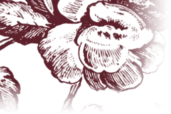
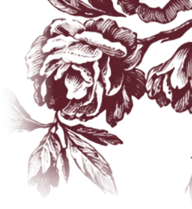
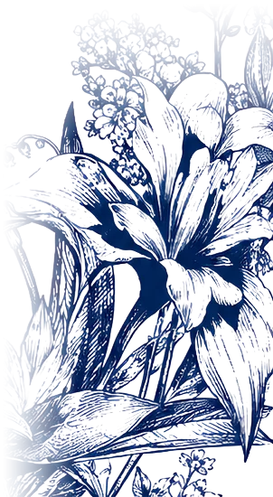
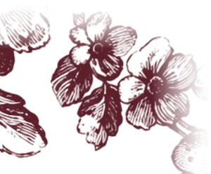
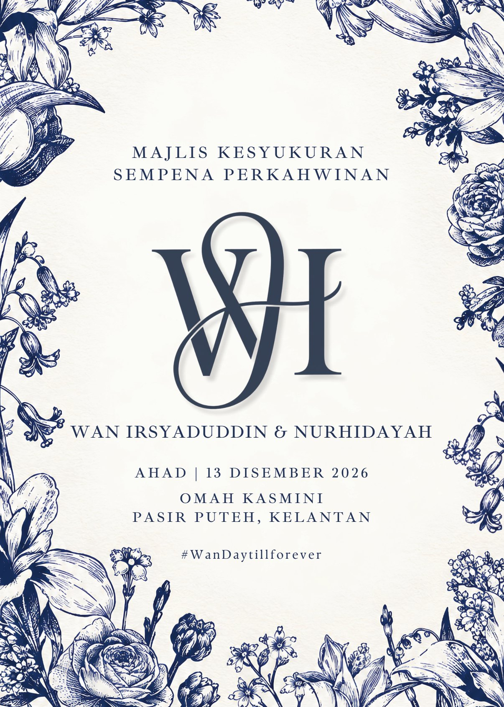
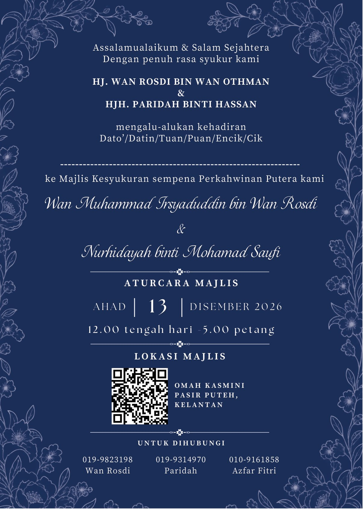

Sempena Perkahwinan
وَمِنْ آيَاتِهِ أَنْ خَلَقَ لَكُم مِّنْ أَنفُسِكُمْ أَزْوَاجًا لِّتَسْكُنُوا إِلَيْهَا وَجَعَلَ بَيْنَكُم مَّوَدَّةً وَرَحْمَةً ۚ إِنَّ فِي ذَٰلِكَ لَآيَاتٍ لِّقَوْمٍ يَتَفَكَّرُونَ
“Dan di antara tanda-tanda kekuasaan-Nya ialah Dia menciptakan untuk kamu isteri-isteri dari jenis kamu sendiri, supaya kamu cenderung dan merasa tenteram kepadanya, dan dijadikan-Nya di antara kamu rasa kasih sayang dan belas kasihan. Sesungguhnya pada yang demikian itu benar-benar terdapat tanda-tanda bagi kaum yang berfikir.”
Majlis Kesyukuran
Assalamualaikum & Salam Sejahtera
Dengan penuh rasa syukur kami
HJ. WAN ROSDI BIN WAN OTHMAN
&
HJH. PARIDAH BINTI HASSAN
mengalu-alukan kehadiran
Dato’/Datin/Tuan/Puan/Encik/Cik
ke Majlis Kesyukuran sempena
Perkahwinan Putera kami
bin Wan Rosdi&Nurhidayah binti
Mohamad Saufi
Save the Date
Pasir Puteh, Kelantan
Alhamdulillah, majlis telah berlangsung. Terima kasih atas doa anda.
Aturcara Majlis
Ketibaan tetamu & jamuan makan
Ketibaan pengantin
Sesi bergambar bersama pengantin & keluarga
Majlis bersurai
Kehadiran dan doa restu anda amat kami hargai.
Tempat Majlis
Omah Kasmini
Pasir Puteh, Kelantan
Kad Kami


RSVP
Ucapan
Titipkan ucapan dan doa buat pasangan pengantin.
Hubungi Kami
بَارَكَ اللَّهُ لَكَ وَبَارَكَ عَلَيْكَ وَجَمَعَ بَيْنَكُمَا فِي خَيْرٍ
“Semoga Allah memberkatimu dan menurunkan keberkatan ke atasmu, serta menghimpunkan kamu berdua dalam kebaikan.”
Terima Kasih
#WanDaytillforever